Ihr Meisterbetrieb für Innenausbau und Möbel nach Maß, seit 2003 in Lübeck.
Balken, Boden, Verkleidung: Wir bauen Ihr Dachgeschoss komplett aus.
Planung, Lieferung und Montage von Fenstern und Türen in Holz und Kunststoff.
Einbauschränke und Maßanfertigungen, auch unter der Dachschräge.
Wir sind Ihr Ansprechpartner für Innenausbau und Möbelfertigung in Lübeck und im Umkreis von 100 km, für Privatkunden ebenso wie für Hausverwaltungen.
Dachgeschossausbau, Wand- und Deckenverkleidungen, Trockenbau.
Planung, Lieferung und Montage in Holz und Kunststoff, Innentüren und Trennwände.
Planung, Lieferung und Montage von Treppen, auch Aufarbeitung alter Holztreppen.
Einbauschränke, Möbel unter der Dachschräge und individuelle Maßanfertigungen.
Fertigparkett und Laminat, fachgerecht verlegt, mit ehrlicher Beratung zur Holzart.
Altbausanierung, Restaurierung, Instandsetzung und Reparaturen im Bau- und Möbelbereich.
Empfangstresen, Arbeitsplätze und Einrichtungen für Praxen und Geschäfte.
Durch Kooperation mit Betrieben der Nebengewerke bekommen Sie alles von einem Ansprechpartner.
Die Tischlerei J.A. Neumann wurde am 1. August 2003 gegründet. Unser Team bringt jahrzehntelange Berufserfahrung mit und fertigt fach- und sachgerecht nach Ihren ganz persönlichen Wünschen, ob nach unserer Beratung oder nach Ihren eigenen Zeichnungen.
„Hat super tolle Arbeit gemacht, sind total zufrieden, Herr Neumann ist einfach weiter zu empfehlen. Dankeschön!“
Google-Bewertung · weitere Stimme: Pünktlichkeit, Qualität, Professionalität
Ein Blick auf Projekte, die wir umgesetzt haben: Dachausbau, Einbaumöbel, Küchen und Praxiseinrichtungen.
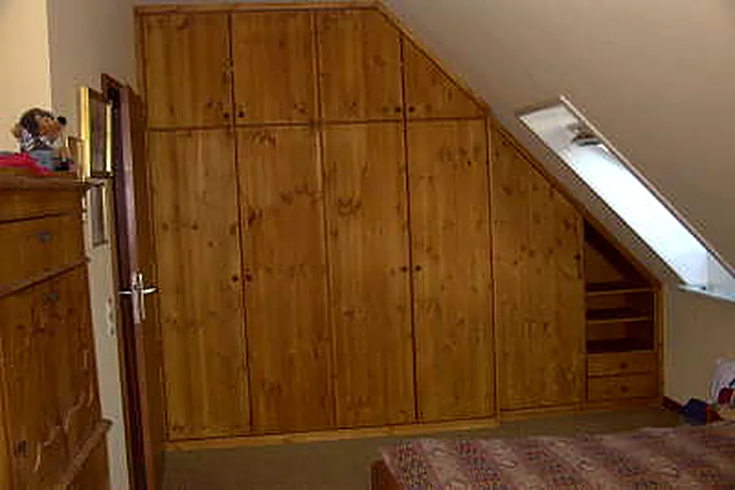
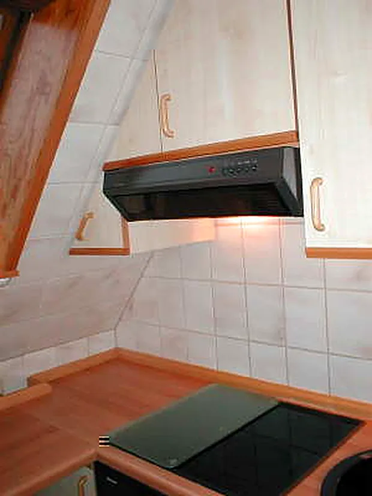
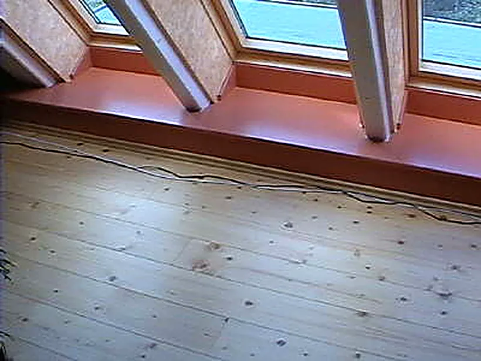
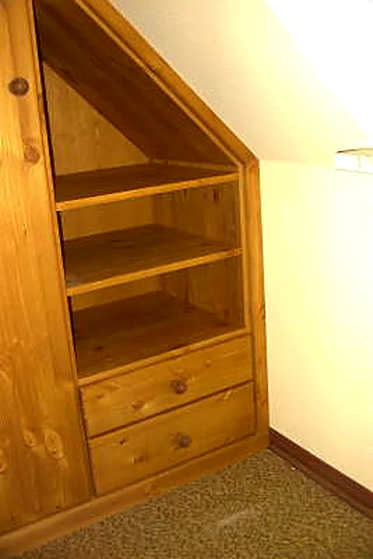
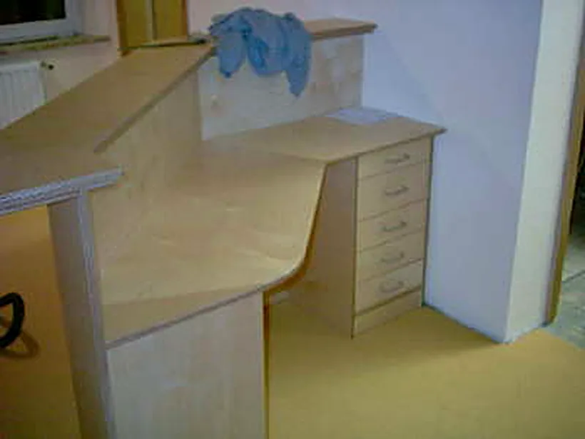
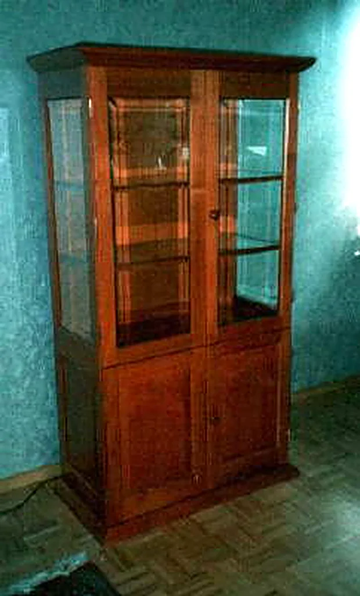
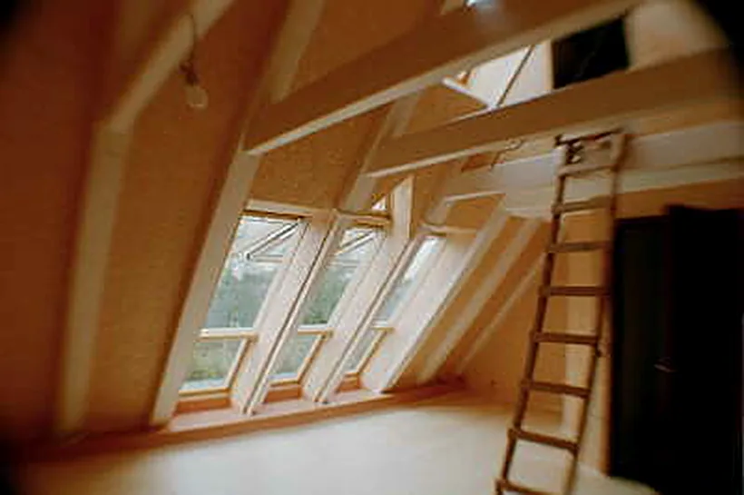
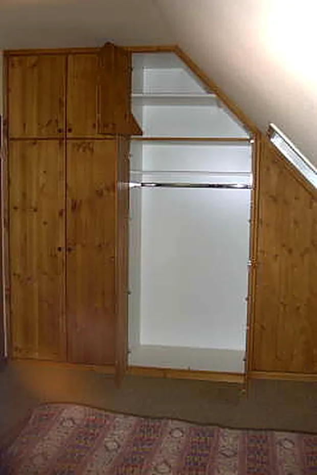
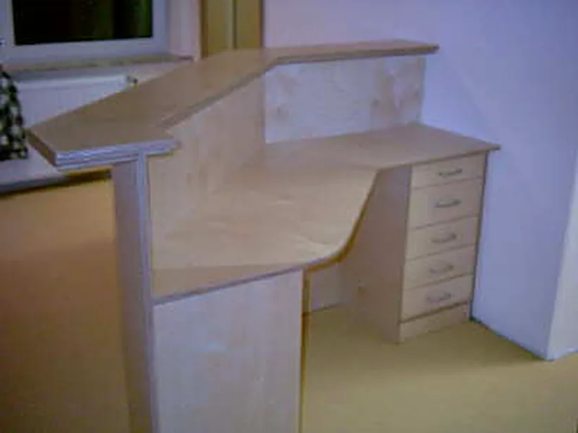
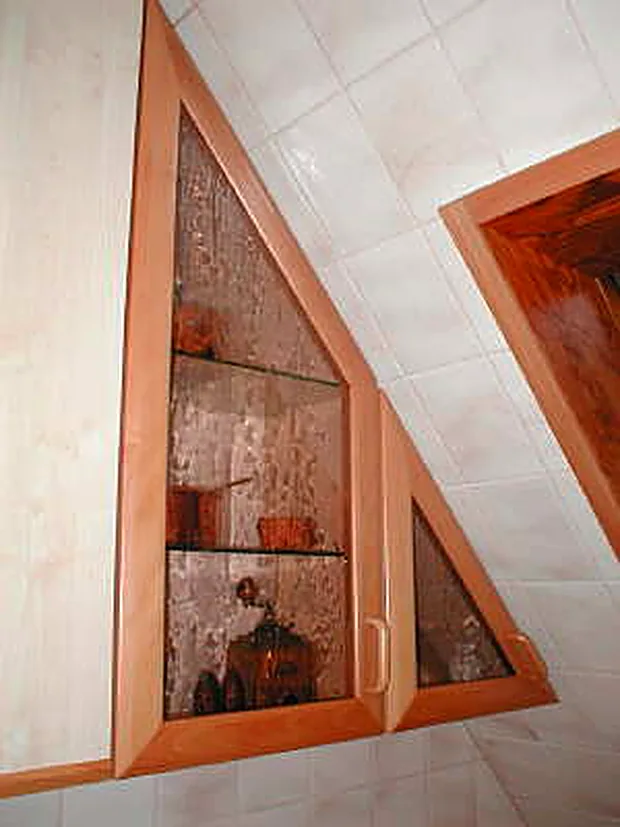
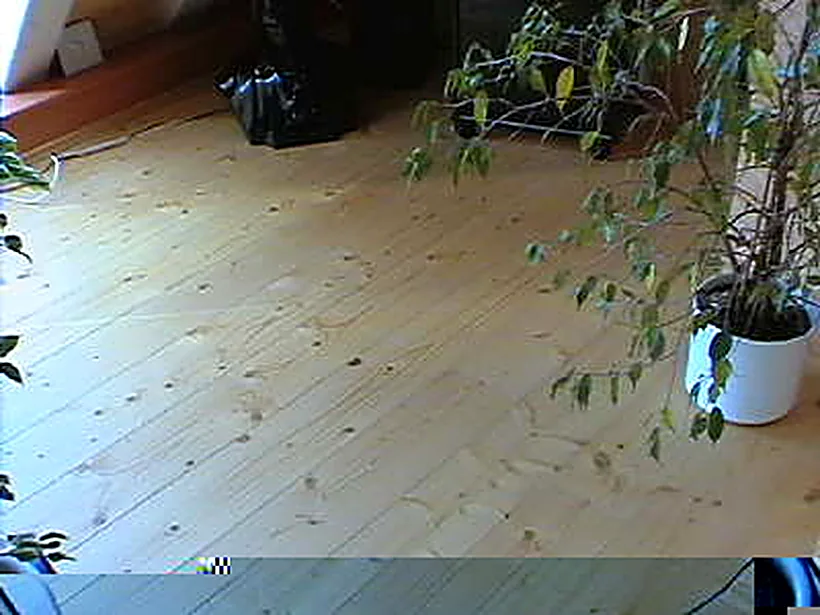
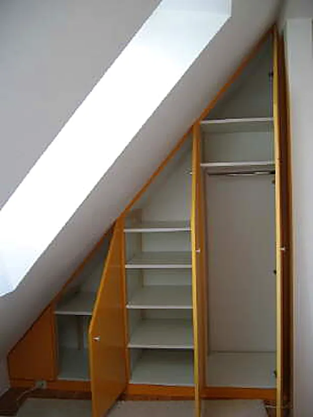
Bilder aus früheren Projekten. Aktuelle Fotos folgen.
Eiche ist unproblematischer als Ahorn, weil sie weniger zu Fugenbildung neigt. Ohne Fußbodenheizung und bei ausgeglichenem Raumklima funktioniert aber auch Ahorn völlig problemlos. Wir beraten Sie gern, welche Holzart zu Ihrem Haus passt.
Ja, oft lohnt sich das. Je nach Lack und Profil arbeiten wir mit Abbeizer, Schleifen oder der Ziehklinge. Wir schauen uns Ihre Treppe gern vor Ort an.
Natürlich. Sie können uns Ihre Ideen beschreiben oder genaue Zeichnungen mitbringen. Gemeinsam finden wir die beste Lösung für Ihr Möbel oder Ihren Ausbau.
Wir arbeiten in Lübeck und im Umkreis von rund 100 km, also auch in Schleswig-Holstein und im Raum Hamburg.
Für eine kostenlose Beratung erreichen Sie uns Montag bis Freitag von 7 bis 18 Uhr telefonisch oder jederzeit per E-Mail.
Sie finden uns nahe der A1, Abfahrt Lübeck-Moisling. Wir kommen für Beratung und Aufmaß zu Ihnen, in ganz Schleswig-Holstein und im Raum Hamburg.